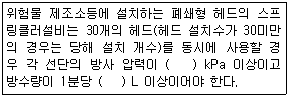
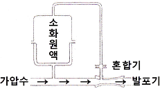
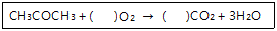

위험물기능사 (2010-10-03 기출문제)
1과목: 화재 예방과 소화방법
1. 다음 ( ) 안에 들어갈 수치를 순서대로 올바르게 나열한 것은? (단, 제4류 위험물에 적응성을 갖기 위한 살수밀도기준을 적용하는 경우를 제외한다.)

- 100, 80
- 120, 80
- 100, 100
- 120, 100
(정답률: 68%)

2. 일반적으로 폭굉파의 전파속도는 어느 정도인가?
- 0.1 ~ 10m/s
- 100 ~ 350m/s
- 1000 ~ 3500m/s
- 10000 ~ 35000m/s
(정답률: 65%)
3. 다음 소화약제 중 오존파괴지수(ODP)가 가장 큰 것은?
- IG-541
- Halon 2402
- Halon 1211
- Halon 1301
(정답률: 61%)
4. 화학포소화기에서 탄산수소나트륨과 황산알루미늄이 반응하여 생성되는 기체의 주성분은?
- CO
- CO2
- N2
- Ar
(정답률: 75%)
5. 철분, 금속분, 마그네슘에 적응성이 있는 소화설비는?
- 이산화탄소소화설비
- 할로겐화합물소화설비
- 포소화설비
- 탄산수소염류소화설비
(정답률: 78%)
6. 물에 탄산칼륨을 보강시킨 강화액 소화약제에 대한 설명으로 틀린 것은?
- 물보다 점성이 있는 수용액이다.
- 일반적으로 약산성을 나타낸다.
- 응고점은 약 -30 ~ -26℃이다.
- 비중은 약 1.3 ~ 1.4 정도이다.
(정답률: 62%)
7. 옥외저장소에서 지정수량 200배 초과의 위험물을 저장할 경우 보유공지의 너비는 몇 m 이상으로 하여야 하는가? (단, 제4류 위험물과 제6류 위험물은 제외한다.)
- 0.5
- 2.5
- 10
- 15
(정답률: 58%)
8. 위험물 안전관리법령상 소화설비의 구분에서 “물분무등소화설비”의 종류가 아닌 것은?
- 스프링클러설비
- 할로겐화합물소화설비
- 이산화탄소소화설비
- 분말소화설비
(정답률: 66%)
9. 공기 중의 산소농도를 한계산소량 이하로 낮추어 연소를 중지시키는 소화방법은?
- 냉각소화
- 제거소화
- 억제소화
- 질식소화
(정답률: 86%)
10. 이동탱크저장소에 있어서 구조물 등의 시설을 변경하는 경우 변경허가를 득하여야 하는 경우는?
- 펌프설비를 보수하는 경우
- 동일 사업장내에서 상치장소의 위치를 이전하는 경우
- 직경이 200㎜인 이동저장탱크의 맨홀을 신설하는 경우
- 탱크본체를 절개하여 탱크를 보수하는 경우
(정답률: 49%)
11. 유류화재의 급수 표시와 표시색상으로 옳은 것은?
- A급, 백색
- B급, 황색
- A급, 황색
- B급, 백색
(정답률: 84%)
12. 과산화리튬의 화재현장에서 주수소화가 불가능한 이유는?
- 수소가 발생하기 때문에
- 산소가 발생하기 때문에
- 이산화탄소가 발생하기 때문에
- 일산화탄소가 발생하기 때문에
(정답률: 63%)
13. 위험물안전관리법령에 의하면 옥외소화전이 6개 있을 경우 수원의 수량은 몇 m3 이상이어야 하는가?
- 48m3 이상
- 54m3 이상
- 60m3 이상
- 81m3 이상
(정답률: 67%)
14. 분말 소화약제의 분류가 옳게 연결된 것은?
- 제1종 분말약제 : KHCO3
- 제2종 분말약제 : KHCO3＋(NH2)2CO
- 제3종 분말약제 : NH4H2PO4
- 제4종 분말약제 : NaHCO3
(정답률: 74%)
15. 마른모래(삽 1개 포함) 50리터의 소화능력단위는?
- 0.1
- 0.5
- 1
- 1.5
(정답률: 70%)
16. 그림은 포소화설비의 소화약제 혼합장치이다. 이 혼합 방식의 명칭은?

- 라인프로포셔너
- 펌프프로포셔너
- 프레셔프로포셔너
- 프레셔사이드프로포셔너
(정답률: 47%)
17. 황의 화재예방 및 소화방법에 대한 설명 중 틀린 것은?
- 산화제와 혼합하여 저장한다.
- 정전기가 축적되는 것을 방지한다.
- 화재시 분무 주수하여 소화할 수 있다.
- 화재시 유독가스가 발생하므로 보호장구를 착용하고 소화한다.
(정답률: 68%)
18. 건축물의 1층 및 2층 부분만을 방사능력범위로 하고, 지하층 및 3층 이상의 층에 대하여 다른 소화설비를 설치해야 하는 소화설비는?
- 스프링클러설비
- 포소화설비
- 옥외소화전설비
- 물분무소화설비
(정답률: 60%)
19. 산화열에 의해 자연발화가 발생할 위험이 높은 것은?
- 건성유
- 니트로셀룰로오스
- 퇴비
- 목탄
(정답률: 48%)
20. 옥내에서 지정수량 100배 이상을 취급하는 일반취급소에 설치하여야 하는 경보설비는? (단, 고인화점 위험물만을 취급하는 경우는 제외한다.)
- 비상경보설비
- 자동화재탐지설비
- 비상방송설비
- 비상벨설비 및 확성장치
(정답률: 82%)
2과목: 위험물의 화학적 성질 및 취급
21. 트리니트로톨루엔에 관한 설명으로 옳은 것은?
- 불연성이지만 조연성 물질이다.
- 폭약류의 폭약을 비교할 때 기준 폭약으로 활용된다.
- 인화점이 30℃보다 높으므로 여름철에 주의해야 한다.
- 분해연소하면서 다량의 고체를 발생한다.
(정답률: 57%)
22. 니트로셀룰로오스에 관한 설명으로 옳은 것은?
- 섬유소를 진한 염산과 석유의 혼합액으로 처리하여 제조한다.
- 직사광선 및 산의 존재하에 자연발화의 위험이 있다.
- 습윤상태로 보관하면 매우 위험하다.
- 황갈색의 액체상태이다.
(정답률: 64%)
23. 다음 아세톤의 완전 연소 반응식에서 ( ) 안에 알맞은 계수를 차례대로 옳게 나타낸 것은?

- 3, 4
- 4, 3
- 6, 3
- 3, 6
(정답률: 60%)
24. 제1류 위험물을 취급할 때 주의사항으로서 틀린 것은?
- 환기가 잘되는 서늘한 곳에 저장한다.
- 가열, 충격, 마찰을 피한다.
- 가연물과의 접촉을 피한다.
- 밀폐용기는 위험하므로 개방용기를 사용해야 한다.
(정답률: 81%)
25. 유황 500kg, 인화성고체 1000kg을 저장하려 한다. 각각의 지정수량 배수의 합은 얼마인가?
- 3배
- 4배
- 5배
- 6배
(정답률: 63%)
26. 위험물의 유별(類別) 구분이 나머지 셋과 다른 하나는?
- 황린
- 금속분
- 황화린
- 마그네슘
(정답률: 68%)
27. 인화성액체 위험물을 저장 또는 취급하는 옥외탱크저장소의 방유제 내에 용량 10만L와 5만L인 옥외저장탱크 2기l를 설치하는 경우에 확보하여야 하는 방유제의 용량은?
- 50000L 이상
- 80000L 이상
- 100000L 이상
- 110000L 이상
(정답률: 54%)
28. 내용적이 20000L 인 옥내저장탱크에 대하여 저장 또는 취급의 허가를 받을 수 있는 최대용량은? (단, 원칙적인 경우에 한 한다.)
- 18000L
- 19000L
- 19400L
- 20000L
(정답률: 58%)
29. 다음 중 공기에서 산화되어 액 표면에 피막을 만드는 경향 가장 큰 것은?
- 올리브유
- 낙화생유
- 야자유
- 동유
(정답률: 47%)
30. 제2류 위험물의 화재예방 및 진압대책으로 적합하지 않은 것은?
- 강산화제와 혼합을 피한다.
- 적린과 유황은 물에 의한 냉각소화가 가능하다.
- 금속분은 산과의 접촉을 피한다.
- 인화성고체를 제외한 위험물제조소에는 “화기엄금”주의사항 게시판을 설치한다.
(정답률: 62%)
31. 제5류 위험물에 관한 내용으로 틀린 것은?
- C2H5ONO2 : 상온에서 액체이다.
- C6H2OH(NO2)3 : 공기 중 자연분해가 매우 잘 된다.
- C6H3(NO2)2CH3 : 담황색의 결정이다.
- C3H5(ONO2)3 : 혼산 중에 글리세린을 반응시켜 제조한다.
(정답률: 43%)
32. 알루미늄분의 성질에 대한 설명 중 틀린 것은?
- 염산과 반응하여 수소를 발생한다.
- 끓는 물과 반응하면 수소화알루미늄이 생성된다.
- 산화제와 혼합시키면 착화의 위험이 있다.
- 은백색의 광택이 있고 물보다 무거운 금속이다.
(정답률: 42%)
33. 위험물을 저장할 때 필요한 보호물질을 옳게 연결한 것은?
- 황린 - 석유
- 금속칼륨 - 에탄올
- 이황화탄소 - 물
- 금속나트륨 - 산소
(정답률: 66%)
34. 지정수량의 10배의 위험물을 운반할 경우 제5류 위험물과 혼재 가능한 위험물에 해당하는 것은?
- 제1류 위험물
- 제2류 위험물
- 제3류 위험물
- 제6류 위험물
(정답률: 77%)
35. 제5류 위험물 중 지정수량이 잘못된 것은?
- 유기과산화물 : 10kg
- 히드록실아민 : 100kg
- 질산에스테르류 : 100kg
- 니트로화학물 : 200kg
(정답률: 68%)
36. 소화설비의 설치기준으로 옳은 것은?
- 제4류 위험물을 저장 또는 취급하는 소화난이도등급 I 인 옥외탱크저장소에는 대형수동식소화기 및 소형수동식소화기 등을 각각 1개 이상 설치할 것
- 소화난이도등급 Ⅱ인 옥내탱크저장소는 소형수동식소화기 등을 2개 이상 설치할 것
- 소화난이도등급Ⅲ인 지하탱크저장소는 능력단위의 수치가 2 이상인 소형수동식소화기 등을 2개 이상 설치할 것
- 제조소등에 전기설비(전기배선, 조명기구 등은 제외한다)가 설치된 경우에는 당해 장소의 면적 100m2마다 소형수동식화기를 1개 이상 설치할 것
(정답률: 48%)
37. 종류(유별)가 다른 위험물을 동일한 옥내저장소의 동일한 실에 같이 저장하는 경우에 대한 설명으로 틀린 것은?
- 제1류 위험물과 황린은 동일한 옥내저장소에 저장할 수 있다.
- 제1류 위험물과 제6류 위험물은 동일한 옥내저장소에 저장할 수 있다.
- 제1류 위험물 중 알칼리금속의 과산화물과 제5류 위험물은 동일한 옥내저장소에 저장할 수 있다.
- 유별을 달리하는 위험물을 유별로 모아서 저장하는 한편 상호간에 1미터 이상의 간격을 두어야 한다.
(정답률: 54%)
38. 가연성고체에 해당하는 물품으로서 위험등급 Ⅱ에 해당하는 것은?
- P4S3, P
- Mg, (CH3CHO)4
- P4, AlP
- NaH, Zr
(정답률: 53%)
39. 다음 중 인화점이 가장 높은 물질은?
- 이황화탄소
- 디에틸에테르
- 아세트알데히드
- 산화프로필렌
(정답률: 36%)
40. 마그네슘분과 혼합했을 때 발화의 위험이 있기 때문에 접촉을 피해야 하는 것은?
- 건조사
- 팽창질석
- 팽창진주암
- 염소 가스
(정답률: 76%)
41. 금속 나트륨을 페놀프탈레인 용액이 몇 방울 섞인 물속에 넣었다. 이 때 일어나는 현상을 잘못 설명한 것은?
- 물이 붉은 색으로 변한다.
- 물이 산성으로 변하게 된다.
- 물과 반응하여 수소를 발생한다.
- 물과 격렬하게 반응하면서 발열한다.
(정답률: 37%)
42. 제3류 위험물에 해당하는 것은?
- 염소화규소화합물
- 금속의 아지화합물
- 질산구아니딘
- 할로겐간화합물
(정답률: 33%)
43. 위험물을 운반용기에 수납하여 적재할 때 차광성이 있는 피복으로 가려야 하는 위험물이 아닌 것은?
- 제1류 위험물
- 제2류 위험물
- 제5류 위험물
- 제6류 위험물
(정답률: 61%)
44. 위험물안전관리법에서 정하는 위험물이 아닌 것은? (단, 지정수량은 고려하지 않는다.)
- CCl4
- BrF3
- BrF5
- IF5
(정답률: 50%)
45. 탄화칼슘의 성질에 대하여 옳게 설명한 것은?
- 공기 중에서 아르곤과 반응하여 불연성 기체를 발생한다.
- 공기 중에서 질소와 반응하여 유독한 기체를 낸다.
- 물과 반응하면 탄소가 생성된다.
- 물과 반응하여 아세틸렌가스가 생성된다.
(정답률: 69%)
46. 품명과 위험물의 연결이 틀린 것은?
- 제1석유류 - 아세톤
- 제2석유류 - 등유
- 제3석유류 - 경유
- 제4석유류 - 기어유
(정답률: 65%)
47. 제5류 위험물에 해당하지 않는 것은?
- 염산히드라진
- 니트로글리세린
- 니트로벤젠
- 니트로셀룰로오스
(정답률: 57%)
48. NH4ClO4에 대한 설명 중 틀린 것은?
- 가연성물질과 혼합하면 위험하다.
- 폭약이나 성냥 원료로 쓰인다.
- 에테르에 잘 녹으나 아세톤, 알코올에는 녹지 않는다.
- 비중이 약 1.87 이고 분해온도가 130℃ 정도이다.
(정답률: 60%)
49. 질산에스테르류에 속하지 않는 것은?
- 니트로셀룰로오스
- 질산에틸
- 니트로글리세린
- 디니트로페놀
(정답률: 59%)
50. 위험물 운송에 관한 규정으로 틀린 것은?
- 이동탱크저장소에 의하여 위험물을 운송하는 자는 당해 위험물을 취급할 수 있는 국가기술자격자 또는 안전교육을 받은 자이어야 한다.
- 안전관리자·탱크시험자·위험물운송자 등 위험물의 안전 관리와 관련된 업무를 수행하는 자는 시·도지사가 실시하는 안전교육을 받아야 한다.
- 운송책임자의 범위, 감독 또는 지원의 방법 등에 관한 구체적인 기준은 행정안전부령으로 정한다.
- 위험물운송자는 행정안전부령이 정하는 기준을 준수하는 등 당해 위험물의 안전 확보를 위해 세심한 주의를 기울여야 한다.
(정답률: 62%)
51. 질산암모늄의 위험성에 대한 설명에 해당하는 것은?
- 폭발기와 산화기가 결합되어 있어 100℃에서 분해 폭발한다.
- 인화성액체로 정전기에 주의하여야 한다.
- 400℃에서 분해되기 시작하여 540℃에서 급격히 분해 폭발할 위험성이 있다.
- 단독으로도 급격한 가열, 충격으로 분해하여 폭발의 위험이 있다.
(정답률: 59%)
52. 휘발유에 대한 설명으로 틀린 것은?
- 위험등급은 Ⅰ등급이다.
- 증기는 공기보다 무거워 낮은 곳에 체류하기 쉽다.
- 내장용기가 없는 외장플라스틱용기에 적재할 수 있는 최대용적은 20리터이다.
- 이동탱크저장소로 운송하는 경우 위험물운송자는 위험물안전카드를 휴대하여야 한다.
(정답률: 49%)
53. 이황화탄소 기체는 수소 기체보다 20℃ 1기압에서 몇 배 더 무거운가?
- 11
- 22
- 32
- 38
(정답률: 37%)
54. 탱크안전성능검사 내용의 구분에 해당하지 않는 것은?
- 기초ㆍ지반검사
- 충수ㆍ수압검사
- 용접부검사
- 배관검사
(정답률: 64%)
55. 금속나트륨의 일반적인 성질에 대한 설명 중 틀린 것은?
- 비중은 약 0.79 이다.
- 화학적으로 활성이 크다.
- 은백색의 가벼운 금속이다.
- 알코올과 반응하여 질소를 발생한다.
(정답률: 65%)
56. 제4류 위험물의 옥외저장탱크에 설치하는 밸브 없는 통기관은 직경이 얼마 이상인 것으로 설치해야 되는가? (단, 압력탱크는 제외한다.)
- 10㎜
- 20㎜
- 30㎜
- 40㎜
(정답률: 69%)
57. 제6류 위험물의 위험성에 대한 설명으로 적합하지 않은 것은?
- 질산은 햇빛에 의해 분해되어 NO2를 발생한다.
- 과염소산은 산화력이 강하여 유기물과 접촉 시 연소 또는 폭발한다.
- 질산은 물과 접촉하면 발열한다.
- 과염소산은 물과 접촉하면 흡열한다.
(정답률: 53%)
58. 제조소등의 관계인은 위험물제조소등에 대하여 기술기준에 적합한지의 여부를 정기적으로 점검을 하여야 하는바, 법적 최소 점검주기에 해당하는 것은?
- 주1회 이상
- 월1회 이상
- 6개월 1회 이상
- 연1회 이상
(정답률: 70%)
59. 시클로헥산에 관한 설명으로 가장 거리가 먼 것은?
- 고리형 분자구조를 가진 방향족 탄화수소화합물이다.
- 화학식은 C6H12이다.
- 비수용성 위험물이다.
- 제4류 제1석유류에 속한다.
(정답률: 47%)
60. 제5류 위험물의 화재예방 및 진압대책에 대한 설명 중 틀린 것은?
- 벤조일퍼옥사이드의 저장 시 저장용기에 희석제를 넣으면 폭발위험성을 낮출 수 있다.
- 건조 상태의 니트로셀룰로오스는 위험하므로 운반 시에는 물, 알코올 등으로 습윤 시킨다,
- 디니트로톨루엔은 폭발감도가 매우 민감하고 폭발력이 크므로 가열, 충격 등에 주의하여 조심스럽게 취급해야 한다.
- 트리니트로톨루엔은 폭발시 다량의 가스가 발생하므로 공기호흡기 등의 보호장구를 착용하고 소화한다.
(정답률: 29%)